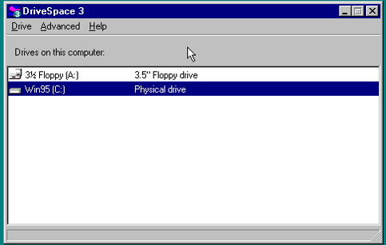

Drive Space 3
DriveSpace Утилита сжатия дисков, поставляемая с MS-DOS начиная с версии 6.0 в 1993 году и заканчивая выпуском Windows Me в 2000 году.

Подробнее о DriveSpace
- Назначение DriveSpace - увеличить объем данных, которые пользователь может хранить на дисках, путем прозрачного сжатия и распаковки данных на лету. В первую очередь она предназначена для использования с жесткими дисками, но также поддерживается использование для гибких дисков. Эта функция была удалена в Windows XP и более поздних версиях.
- В наиболее распространенном сценарии использования у пользователя будет один жесткий диск на компьютере со всем пространством, выделенным для одного раздела (обычно это диск C:). Программное обеспечение будет сжимать все содержимое раздела в один большой файл в корневом каталоге. При загрузке системы драйвер выделял этот большой файл как диск C:, обеспечивая обычный доступ к файлам.
- На решение Microsoft добавить сжатие диска в MS-DOS 6.0 повлиял тот факт, что конкурирующая DR DOS ранее начала включать программное обеспечение для сжатия диска, начиная с версии 6.0 в 1991 году.
- Вместо того, чтобы разрабатывать свой собственный продукт с нуля, Microsoft лицензировала технологию продукта DoubleDisk , разработанного Vertisoft , и адаптировала его, чтобы он стал DoubleSpace. Например, загрузка драйвера, управляющего сжатием/распаковкой (DBLSPACE.BIN), стала более глубоко интегрирована в операционную систему (загружаясь через недокументированный API предварительной загрузки еще до файла CONFIG.SYS ).